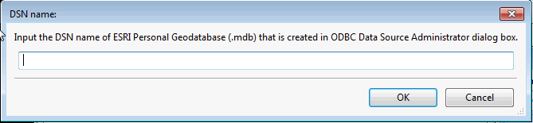

Plugins | Setup ESRI Personal Geodatabase Plugin
In 32-bit Windows, you should be able to open ESRI Personal Geodatabase (*.mdb) file directly.
But in 64-bit Windows, GeoDa only accept the DSN name of ESRI Personal Geodatabase (*.mdb) file that is created in ODBC Data Source Administrator dialog box.

To make your ESRI Personal Geodatabase (.mdb file) to be accessed by GeoDa, you need to create a DSN name for it (Microsoft Access Driver (*.mdb, *.accdb) in ODBC Data Source Administraor in Control Panel.

After previous step, you can enter the Name of DSN just created to open this ESRI Personal Database.
Contact
Questions? Contact us.